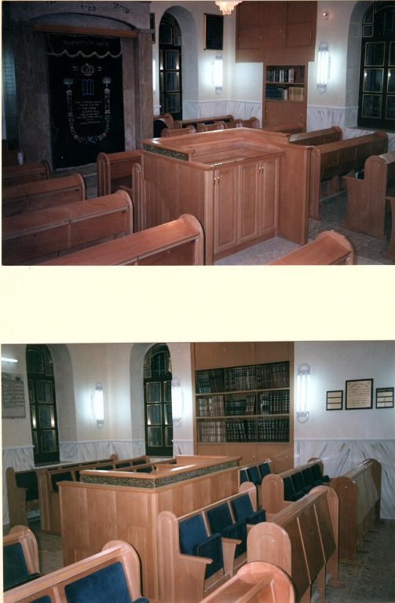
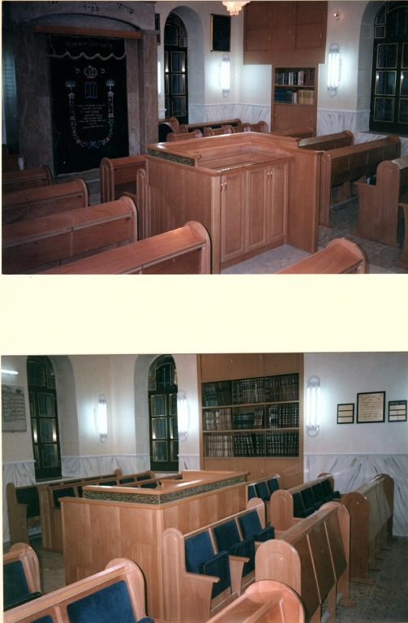
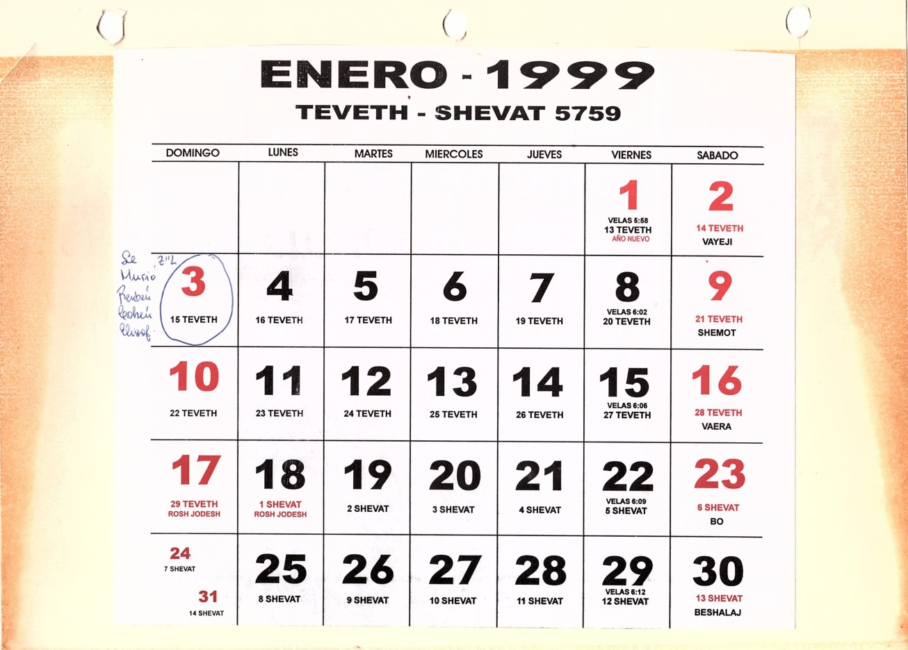
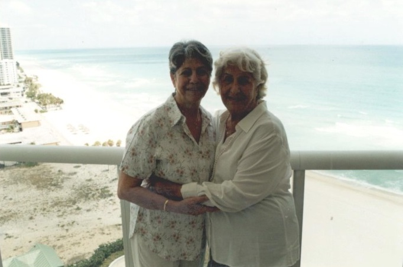
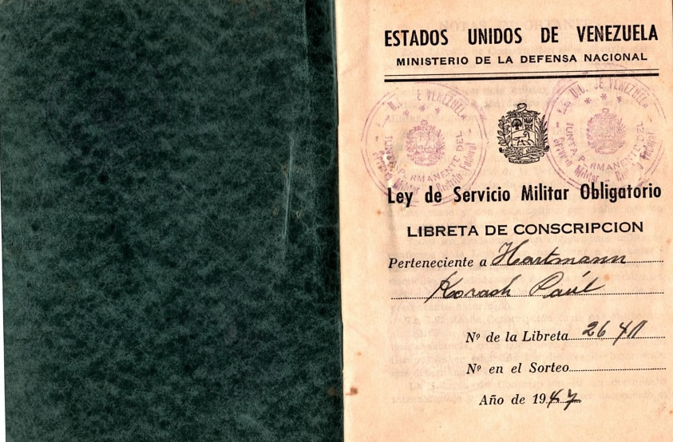
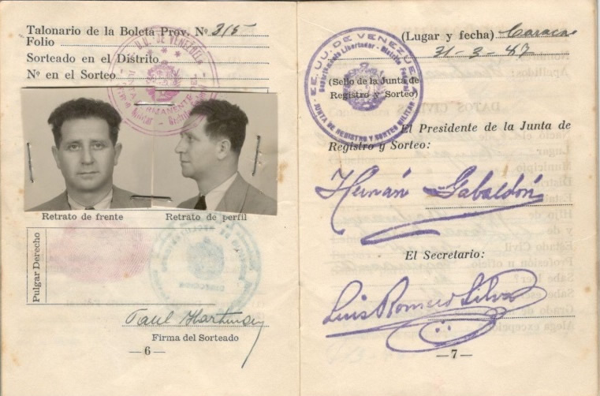
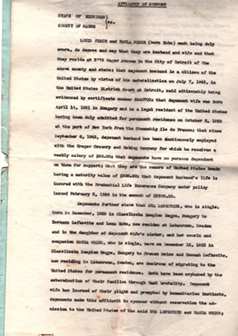
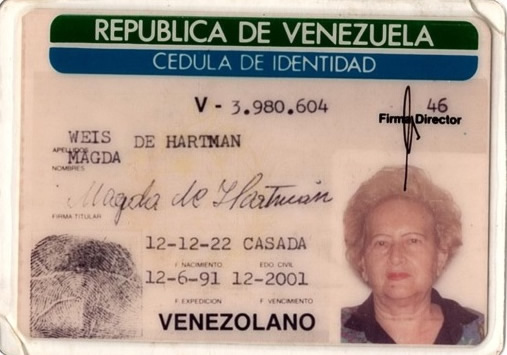
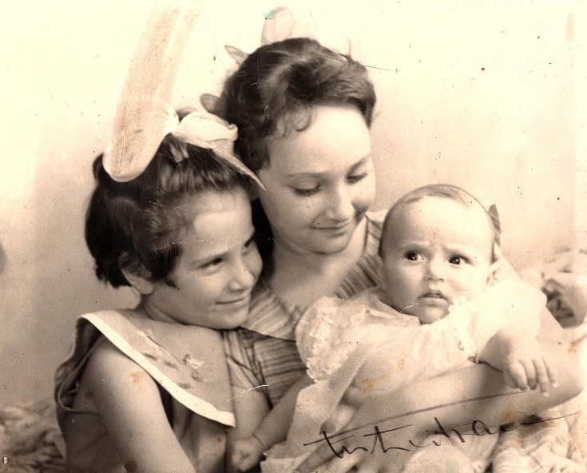
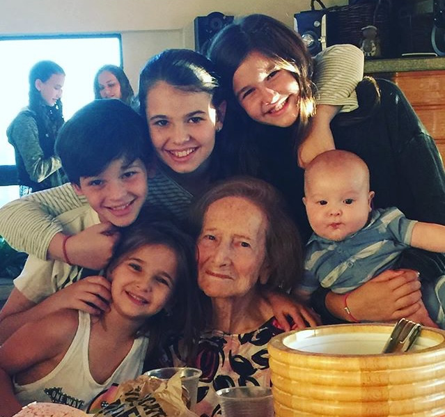

La historia de mis ancestros
He decidido incorporar la historia de mis ancestros más lejanos, ya que como expresé en la introducción mi meta es mantenerlos vivo, así sea colocando sus nombres. De algunos sé más que de otros, pero procuraré colocar en estas páginas los nombres de ellos para recordarlos y porque ellos forman parte de mí.
Ancestros de mi abuelo Nico
Mis tátara abuelos Yaacov Levy y Mazal Aljadish, los dos nacidos en Salónica, Tuvieron 5 hijos:
Nissim (mi bisabuelo), Buca (Maijor), quien tuvo a Enriette (Reti), que vive en Tel Aviv, Israel. Signora, quien tuvo a Olga, Salomón, quien murió joven y Yuli, quien no tuvo hijos.
Los dos se mudaron a Rumania donde fueron dueños de un casino y lograron hacer mucha plata. Este casino era el negocio de toda la familia, era el Casino de Sinaya en Bucarest.
Mi Bisabuelo Nissin se casa con Liza Abramoba de Bulgaria y tuvieron a Herman (Tzvi) quien nació el 6 de abril 1937 y a Salomón nacido el 5 de abril de 1944. Al año de su nacimiento se escaparon dejando todo atrás (solo se quedaron con los documentos de la casa, pensando regresar algún día y reclamar lo que les pertenecía). Llegaron a Israel y se establecieron en una Maabara (pueblo de tránsito en el que vivían en carpas) Ellos vivían en tal grado de pobreza que deciden enviar a Nico a vivir a un Kibutz en el norte de Israel, llamado Mizra. Al cabo de un tiempo se mudan a Haifa y mi abuelo comienza el ejército.
La hermana de Nissim, Signora y su esposo Micu, se mudan a Caracas (desconocemos las razones por la que se dirigen a este país), luego llegan Yuli y su esposo Jean y se traen a mi bisabuelo quien llega en el año 1956. Mi bisabuela Liza se queda en Israel para no dejar a su hijo mayor, quien justo se encontraba luchando en la Guerra del Sinaí.
En el año 1958 llegan a Venezuela Liza y sus dos hijos. Nissim fue primeramente Buhonero. Al poco tiempo de la llegada de su esposa e hijos él fallece, en el año 1960, dejando a Liza viuda en un país extraño. Ella y sus hijos viven en San Bernardino y siempre trabajó con mi abuelo Nico, sin embargo vivió con su hijo Salomón hasta su muerte en el año de 1995.
Mi papá nunca conoció a su abuelo paterno y de su abuela tampoco cuenta mucho, pues dice que no había tanta relación. La recuerda siempre siendo una señora muy mayor. Tiene en su memoria una anécdota en que ella se quedó a dormir en su casa porque sus padres estaban de viaje y durmieron los tres juntos en la cama (La abuela, Niso (el hermano mayor de mi papá) y él y que ellos habían hecho una travesura y ella los iba a castigar y empezaron a correr y ella los persiguió y había una mesa redonda en el comedor y se encontraron los tres corriendo alrededor de la mesa. También recuerda que cocinaba muy bien.
1 Acta de matrimonio original y su traducción al español, de mis bisabuelos Nissim y Liza Levy
2 Permiso de entrada a Venezuela para mi bisabuela Liza, mi abuelo Nico y su hermano Salomón. Firmado el 6 de septiembre de 1957.
3 Mi bisabuelo Nissim
4 Mi familia Levy; de izquierda a derecha: Mi tía bisabuela Juli (Hermana de mi abuelo Nissim), mi abuelo Nico, Su mamá (mi bisabuela Liza), mi tío Niso, mi abuela Sarina, mi papá y tío Jimmy, mi tío Salomón (hermano de mi abuelo Nico), su esposa, mi tía Mery y los primos hermanos de mi papá: Rebeca y Nissim (hijos de Salomón y Mery)
5 Mis ancestros Levy ya en Caracas. De izquierda a derecha: mi bisabuelo Nissim, Signora (hermana de mi bisabuelo) Jean (su cuñado) Juli (hermana de Nissim y esposa de Jean) Olga (prima hermana de mi papá) y el papá de olga y esposo de Signora; Micu.
Ancestros de mi Abuela Sarina
Mi abuela no sabe mucho de sus antepasados, pero estuvo dispuesta a contarme lo que sabía sobre sus padres.
Jose (Joseph Arie, en hebreo) Avram, nació el 4 de diciembre de 1922 en Iasi, Rumania. Hijo de Marcos (Mordejai) Avram y Sara Goldemberg, los dos oriundos del mismo lugar. De sus abuelos no sabe mucho, pero sabe que su abuelo Marcos compraba y vendía aluminio y que tenían una buena posición económica. Tuvieron 7 hijos: Tzili y Saúl, hermanos morochos son los mayores, y les siguen; Moris, Lupu, Efraim (Fraike); quien murió siendo tan solo un pequeño niño, José (mi bisabuelo) y Sheli. Existía 20 años de diferencia entre los morochos y la más chiquita de los hermanos. Todos ellos, menos Sheli se casaron y tuvieron hijos en Rumania, pero deciden emigrar en el año 1946.
Rumania era un país muy antisemita por tradición y tenemos conocimiento de pogromos que acontecieron en la zona. La mitad de los judíos de Rumania fueron asesinados durante la Segunda Guerra Mundial. Pero en esta historia únicamente uno fue asesinado en manos de los nazis; Mi tío bisabuelo Saúl (el morocho de Tzili). Cuenta mi abuela, que mi bisabuelo José estaba por casarse y por lo tanto su hermano Saúl viajó a Bucarest para comprar unas telas para confeccionar los trajes de la boda y estando allá llegó un camión y empezó a disparar, y mi tío muere. Aparentemente fue una emboscada.
Mi bisabuelo trabajó como policía en Iasi hasta 1941, año en el que ocurrió un espantoso pogromo, específicamente el 29 de junio. Este día hubo muchos tiroteos contó mi bisabuelo José, estaban asesinando a muchas personas, por lo que escondieron a las mujeres de la familia en el ático. En la matanza, perdieron la vida varias miles de personas el número exacto se desconoce, quizá alrededor de ocho mil judíos. A los hombres de la ciudad (los que seguían con vida) los deportaron para llevarlos a campos de trabajo. Entre ellos estuvo mi bisabuelo. El traslado al campo se llevó a cabo vía tren, los pusieron en vagones de ganado y donde cabían 100 o 120 personas, introducían a 300 o 400. El tren iba de pueblito en pueblito y la gente moría ahogada. El tren debía parar en las aldeas para sacar a los cadáveres y ahí los enterraban en fosas comunes. Mi bisabuelo José logró escapar en una de esas paradas, ya que al abrir las puertas y al caer los cadáveres él se hizo caer entre los muertos, se escondió entre los cadáveres y cuando vio la oportunidad se escapó.
Después del pogromo de Iasi las autoridades Rumanas no aceptaron ningún tipo de persecución en contra de los judíos. Mi bisabuelo regresó. Cómo llega de vuelta a su ciudad y logra conocer ahí a su futura esposa y casarse, lo desconocemos. Seguro fue una historia fascinante, sin embargo, a mi bisabuelo no le gustaba hablar del tema. Así que me queda imaginarme una historia romántica en la que vio a mi bisabuela y se dijo “Esa será la mujer con la que pasaré el resto de su vida” o tal vez fueron amigos de chiquitos y fueron creciendo y ya no se veían tanto como amigos y decidieron probar salir como “algo más” y así fueron enamorándose o tal vez simplemente fue un matrimonio arreglado, aunque lo dudo, pues ellos no venían de familias religiosas. La realidad es que se casa con Dora Hershkovitz el 3 de diciembre de 1944.
Dora (Dvora) Hershkovitz era hija de Jaim Hershkovitz y Fanny (Feigel) Wolf.
Mi Tátara abuelo Jaim, nacido en Rumania, de hecho estuvo casado antes con otra señora (lamentablemente desconocemos su nombre) y tuvo cuatro hijos con ella: Lea y Shlomo (que eran morochos), Paula, Joseph y Pinjas. Por un tiempo se fueron a Estados Unidos pero por alguna razón que desconocemos se regresaron a Rumania, donde su esposa falleció. Al cabo de un tiempo conoce a Fanny (Feigel) Wolf oriunda de Polonia. Su familia queda en Polonia y mueren asesinados durante la Shoah, únicamente sobreviven ella y una hermana.
Jaim y Fanny tuvieron a Dvora (Dora), Rubén, Sara y Rajel. Todos ellos se casan en Rumania y finalmente emigran a Israel.
Volviendo a la historia de amor entre mis bisabuelos, un año después de casarse nace su primer hijo quien a las pocas horas lamentablemente fallece. El 28 de diciembre de 1946 nace su segundo hijo; Israel (Sorel) en Rumania y a los pocos meses salen de su ciudad natal rumbo a Israel.
La travesía la realizaron a pie, atravesando varios países de Europa. Mi abuela Sarina recuerda que su papá le contó que en el camino él era quien cargaba a su hijo Sorel y que de repente alguien tropezó con algo y cuando se voltea a ver que era, resultó ser un bebe. Ese era mi tío abuelo, a mi bisabuelo se le había resbalado, pues lo llevaba tipo canguro aguantado por una tela y no se dio cuenta que lo había dejado caer (así de cansado habrá estado). Al llegar a Alemania deciden parar la travesía por un tiempo y nace mi abuela Sarina el 3 de septiembre de 1948. A los pocos meses (tres meses) en diciembre se embarcan hacia Israel.
En Israel llegan a una Maabara (pueblo de tránsito en el que se vivía en carpas). Ya parte de la familia se encontraba en Israel. Se asentaron en Ranana, en donde mi bisabuelo José trabajó manejando un camión de cerveza y mi bisabuela Dora trabajó muy duro limpiando en un hospital de tuberculosis, entre otros trabajos.
Tiempo después se mudan a una casita pequeña con un baño compartido con otra casa contigua que era idéntica a la de ellos. El jardín era muy grande. Un día de Janucá la bisabuela estaba friendo Sufganiot (dulce típico de la festividad) y escuchó llorar a la pequeña Sarina. Dejó el sartén caliente sobre la estufa y su hijo Sorel quien tenía mucho antojo de dulce, fue a meter la mano en la sartén, la cual cayó sobre él. Se fueron de urgencia al hospital, donde lo retuvieron en emergencia. El niño no paraba de llorar y su papá quería verlo, pero no se lo permitían. Mi bisabuelo logró entrar a emergencias y se robó a su hijo, pues no le gustaba el trato de aquel hospital.
Como dato curioso, años más tarde mi tío Sorel se fue a vivir a Israel, lamentablemente enfermó de Cáncer y falleció. Los médicos asomaron la posibilidad que tal vez el Cáncer fue ocasionado por las radiaciones que le aplicaron para curar las quemaduras cuando era niño. Su esposa fue al hospital donde lo trataron de niño y al pedir los registros de su esposo, para su sorpresa el registro arrojaba que el niño había fallecido. El hospital tuvo que de alguna manera justificar la desaparición de mi tío y por eso lo declararon muerto.
Otra anécdota que involucra a su hijo Sorel fue que en una ocasión, él le dijo a su mamá que se iba al parque pero término yendo a la playa y se quedó dormido allí y se insoló, pues él era muy blanco. Llegó un soldado y al verlo en ese estado se lo llevó a la policía y cuando mi bisabuela fue a buscarlo no se lo querían devolver porque no sabían si era de ella y decían que no lo había cuidado bien.
Ahora bien Tzili, la hermana de mi bisabuelo José, quien estaba casado con Jacobo Greemberg habían inmigrado a Cali, Colombia, pues el hermano de su esposo llamado Berco, (quien más tarde se casa con Sheli, la hermana menor de mi bisabuelo) ya estaba ahí. Y así es como llegan mis Tátara abuelos Jaim y Sara con Sheli a Colombia, posteriormente traen a José, Dora y sus hijos.
Mi Bisabuelo trabajó vendiendo telas de casa en casa, luego tuvieron una panadería y trabajaron haciendo catering en el club hebreo.
Por su parte al morir mi tátara abuelo Jaim de un infarto, mi tátara abuela Sara monta un restaurante con su hija menor Sheli, hasta que ésta se casa y su esposo ya no quiere que trabaje, así que cierran el restaurante y Sara se muda a vivir con Sheli y su esposo Berco, hasta que muere un 28 de diciembre de 1959.
En los años 70 José y Dora se mudan a Caracas ya que sus hijos (ya los dos casados y con hijos) vivían aquí y deciden pasar el resto de sus vidas acompañados de sus seres queridos.
Montaron una fábrica de vestidos de dama en el centro de Caracas. Al cerrar la fábrica, mi bisabuelo trabajó en un negocio de electrónica. Vivieron en San Bernardino.
Mi bisabuela Dora era diabética e hipertensa y sufría del corazón lo que produjo que finalmente falleciera a la edad de 68 años, el 4 de abril (10 de Nisan) de 1990. Lo que mi papá recuerda de ella es que era muy cariñosa y cocinaba divino. Hacia shabat para reunir a toda la familia, la recuerda siempre metida en la cocina. Mi abuela Sarina la describe como una mujer muy trabajadora y muy pendiente de complacer los gustos de sus nietos. Mi papá corrobora este dato, pues ella sabía que a él le gustaban las uvas sin la concha, entonces cuando él iba a visitarla encontraba un plato lleno de uvas peladas para él. También recuerda que al lado de su casa (que quedaba pegada a la sinagoga Bet-El) había una peluquería a la que ella frecuentaba y cuando salía de ahí parecía a la mama de la serie “Los Simpson”, es decir con un peinado que le llegaba al cielo con la ayuda de mucha laca. Mi papá le decía a sus amigos que su abuela sabia cocinar de todo, tanto era así que sabía hacer Pepsi (como diciendo no hay nada que ella no sepa hacer).
Mi bisabuelo quedó solo viviendo en aquel apartamento hasta que un día unos ladrones entraron y le robaron y ya no quiso vivir solo. Por voluntad propia decide mudarse para vivir en el Beit Avot (hogar de ancianos de la comunidad judía de Caracas) ubicado en San Bernardino y ahí vivió sus últimos años de vida. Él fue muy feliz ahí, le gustaba vivir en ese lugar pues hizo amistades, jugaba barajas y era como el delegado de los viejitos; cada vez que tenían una queja se acercaban a mi bisabuelo y éste refería sus quejas a los administradores del lugar.
Él fue un hombre fabuloso al que todos recuerdan con cariño. Le encantaba ir a ver jugar a sus nietos futbol, trataba de no perderse ningún partido. De hecho si no se presentaba a un partido, los jugadores se sentían desanimados y decían que si “el abuelo” (así es como todos lo llamaba) no venía perderían.
Era un echador de broma, muy jovial y carismático. Los niños lo buscaban en la sinagoga, pues siempre les traía caramelos.
Anecdota
Mi papá recuerda un evento en particular, en el que el siendo un “chamito” (15 o 16 años) estacionando el carro de su papá lo chocó. Mi abuelo Nico se puso histérico y lo regañó muchísimo. Cuando su abuelo José se enteró de lo sucedido, le dijo: “cuando quieras chocar un carro solo agarra el mío”. Así lo recuerda mi papá, un abuelo de verdad, un abuelo que hacia todo por sus nietos.
Muere el 6 de noviembre del 2000.
Imágenes que hablan por sí solas…
6 Este señor que aparece en esta fotografía es el abuelo de mi bisabuela Dora con dos de sus hijas. Desconocemos su nombre, pero su imagen no pasará al olvido.
7 Mi bisabuelo José con su muy querida hija Sarina (mi abuela)

8 Mis bisabuelos José y Dora.
9 Msi bisabuelos José y Dora con mi abuela Sarina.
10 Mi abuela Sarina (a la derecha) y su papá ( a la izquierda, en Israel. Al medio se encuentra una prima hermana de mi abuela con su hija)
11 De izquierda a derecha: Mi tío Niso, mi bisabuelo José, mi tío Jimmy, mi abuelo Nico y mi papá.
Los ancestros de mi abuelo Arie
Esta historia es muy particular pues de estos 4 tatarabuelos 2 de ellos son hermanos y las 2 esposas tienen más o menos la misma historia. Me explico mejor:
Mi Bisabuelo Reubén y mi Bisabuela Penina comparten abuelos paternos, pues sus padres eran hermanos y las madres de ambos también eran parientes de sus esposos.
Bueno comencemos:
Jonathan Yonatanov estaba casado con mi tátara tátara abuela (de quien lamentablemente desconocemos el nombre) quien era viuda de un señor de apellido Akvashoff y ya tenía 3 hijos de este matrimonio: Ben Tzion, Sara y Zulay. Luego al casarse con Jonathan tuvo tres hijos más: Arie, Abba y Moshe. Ellos vivían en Bukara.
Esta ciudad está ubicada en Uzbekistan, era hogar de una antigua comunidad judía que tiene 2500 años de historia. Mi Tátara tátara Abuelo era joyero, por lo que tenían una buena posición económica. Sin embargo, en 1912 llegaron los bolcheviques y maltrataron a los judíos robándoles sus pertenencias y en algunos casos quitándoles lo más sagrado, la vida. Mi familia decide que este no es un lugar seguro para sus hijos. Un hermano de mi tátara tátara abuela llamado Baruj Koba había emigrado a Israel en 1900 y construyó una sinagoga y un edificio contigua a ésta en “Shjunat ha Bujari” en el barrio bujari, en Jerusalén. Decidieron mandar a sus hijos con él.
1 El Sr. Baruj Koba y la sinagoga que construyó.
 

Por
aquellos tiempos, debido a la situación insegura de los judíos de
la zona, un grupo de musulmanes organizaron viajes a hacia Israel.
Preparaban grupos de 20 muchachos (las edades oscilaban entre 10 y 12
años) y los guiaban a pie hacia Tierra Santa. Mis tátara tátara
abuelos ya habían decidido enviar a sus hijos en este grupo donde
también viajaban otros parientes, entre ellos mi tátara abuela
Rajel Maijor, quien fuera esposa años más tarde de mi tátara
abuelo Moshe (padres de mi bisabuela Penina). A Rajel sus padres le
habían confeccionado un palto y en el cuello de éste le colocaron
unas monedas de oro para que lo utilizara únicamente si surgía
alguna eventualidad, alguna emergencia.
2
Mi tátara abuela Sara (mamá
de mu bisabuelo Reubén)
Los muchacho caminaban y caminaban sobre todo de noche porque era más seguro que no los descubrieran y de día descansaban un poco, casi no dormían. A los musulmanes que los guiaban les habían pagado un 50% del total y al dejar a los niños seguros en Israel, los muchachos debían decirles una contraseña que representaba la prueba de fe para los padres de que habían llegado sanos y salvos a su destino. Luego estos guías volvían, les daban a los padres la prueba de vida y éstos les pagaban el resto del dinero.
A los tres hermanos los recibió su tío Baruj Koba, quien los crió hasta que se casaron. Los niños más nunca tuvieron noticias de sus padres.
3 Esposa del Sr. Koba, quien crió a los niños.
Cada uno de ellos se hizo de una profesión: Arie (papá de mi bisabuelo Reubén) era zapatero, Abba vendía pollos y Moshe (papá de mi bisabuela Penina) era carpintero. Los tres vivieron en Shjunat ha Bujari.
Arie
se casó con Sara Eliosof, quien también vivió la misma experiencia
de separarse de sus padres en Bukara y caminar hacia Israel, pero en
un grupo diferente. Los dos tuvieron 5 hijos: Reubén (mi bisabuelo,
nacido en Purim 1920), Rajel, Aliza, Maty y Aarón. Todos nacidos en
Israel menos mi tío Aarón, quien nació en Caracas.
4
Mis tátara abuelos (padres
de mi bisabuela Penina) Moshe y Rajel.
Moshe se casó con Rajel Maijor y tuvieron a: Penina (mi bisabuela nacida en Januca 1924), Jonathan, Shulamit, Isaac y Jacobo.
Abba se casó con Lea Abulafia y tuvieron seis niñas y un varón. Esther, Carmela (la futura esposa de Jonathan), Masha, Rebeca, Miriam, David y Linda. Hoy día viven todos en México, menos mis tías Carmela y Esther.
En el año de 1927 llegó a Israel proveniente de Venezuela un Sr. Llamado Benjamin Mizrahi, quien era un conocido de la familia e invita a los tres hermanos a ir a Venezuela, lugar donde “el dinero crece en los arboles”. Los tres deciden probar y buscar una nueva suerte, agarran sus cosas, dejan a sus respectivas familias y emprenden su viaje.
En Caracas trabajaron vendiendo telas de casa en casa. Ellos les pidieron financiamiento a una compañía llamada Pariente Hermanos y estos le dieron un crédito de 100 bs en telas para ayudarlos. Mi Tátara abuelo Moshe escribió en un papel “ Vendo un metro de tela a un bolívar, la próxima semana vengo y usted me da x cantidad de bolívares” esta frase la escribió en fonética de español pero con escritura hebrea para poder leerla y repetirla a los clientes (eso es lo que se llama ser emprendedor). Y así es como vendía en San José y la Pastora.
Al cabo de unos meses los hermanos trajeron a sus respectivas familias. En el caso de Arie, se tarjo a su esposa y 4 hijos aquí nació el último Aarón. Moshe por su parte trajo a su esposa y 3 hijos, Isaac nació en Caracas. Ellos todos vivían en una residencia tipo vecindad
en
la que había varios cuartos con un jardín en medio de las
habitaciones y todos los que ahí residían se conocían.
5
Mi Tátara abuela Rajel con
mi bisabuela Penina ( a la izquierda) y mi tío Jonathan.
Moshe escuchó que en el Callao “llovía el oro” y se fue solo para ver la situación. Tras poco tiempo manda a su mujer a venir con los cuatro niños (teniendo Isaac pocos meses de nacido). Rajel alquiló un camión y se trasladaron en él hasta el Callao. 20 días vivieron en ese transporte, el trayecto fue complicado ya que las vías eran muy rudimentarias, no había puentes y para pasar los ríos debían esperar que las aguas bajaran. Vivieron 2 años allá. Mi bisabuela recuerda que las condiciones eran muy precarias. Su papá compró un caballo y con él cargaba el oro que comercializaba.
Finalmente en el año 1933 al hacer mucha plata, la familia de mi bisabuela Penina decide regresar a Israel. Los otros hermanos se quedan un tiempo más en Venezuela.
Con mucha riqueza llegan a Jerusalén y Moshe compra un terreno en una parroquia llamada “Majané Yehuda” y construye ahí un edificio con 3 apartamentos 7 negocios y 2 sótanos.
Esta
calle hoy día es donde está ubicado el mercado más famoso de
Jerusalén el “Shuk Majané Yehuda” lugar muy turístico. El
edificio todavía existe en el mismo lugar y en él hay una placa en
memoria a quien fuera su constructor Moshe Cohen.
6
Mi tátara abuelo Moshé "El
millonario"
Mi tátara abuelo era conocido como “El Millonario”. En 1935 nace Jacobo el hermano pequeño de mi bisabuela y todos vivían en el edificio que se llamaba Moshe Rubén Cohen.
Al cabo de unos meses mi tátara abuelo Moshe enfermó con fiebre tifoidea y fallece a la edad de 34 años.
Por otro lado Arie y su familia ya habían regresado a Israel ubicándose en Tel Aviv, donde trabajó como empleado de Gobierno en la alcaldía de Tel Aviv. Cuenta mi tío Isaac, hermano de mi bisabuela (a quien entrevisté para relatar esta historia) que su tío Arie se devolvió a Israel tras un incidente que involucraba a mi bisabuelo Reubén. Una tarde mi tátara abuelo Arie, regresó temprano de trabajar y al entrar al apartamento donde vivían en Caracas, se encontró a mi Bisabuelo muy cariñoso con una amiguita de la escuela. En ese momento el papá de mi bisabuelo decidió que había llegado el tiempo de volver a Israel pues no quería ver a ninguno de sus hijos involucrados con chicas no judías.
En el año de 1940 vino a Jerusalén de visita el primo Reubén, hijo de Arie a visitar a la viuda de su tío Moshe y a sus primos. Al ver a Penina quedó encantado con ella y empezó a cortejarla. Ella tenía 15 años y no estaba preparada para casarse, sin embargo a su mamá le gustaba mucho la idea que su hija se casara con Reubén, pues sabía que este la cuidaría muy bien. Así fue como a la edad de 16 años mi bisabuela fue prácticamente obligada a casarse con mi bisabuelo Reubén, quien tenía 20 años.
Se mudaron a Tel Aviv y tras ellos la familia de mi bisabuela quienes decidieron seguirla para permanecer todos juntos. Mis bisabuelos vivían en Nevé Shalom en un apartamento en una planta baja, la cual los árabes bombardearon en 1948, tras declararse la independencia de Israel. Mis bisabuelos quedaron sin casa y con dos niños pequeños: Moshe nacido el 24 de octubre de 1943 y Arie quien nació el 12 de septiembre de 1944.
Mi bisabuelo Reubén rápidamente construyó un ranchito en lo que hoy día seria” Kikar Ha Medina” en Tel Aviv. Trabajó como mecánico en un garaje de carros marca Fiat. Poco a poco ahorró, alquiló un galpón en Rejov Yaffo y montó su propio taller de carros llamado “Garaje Reubén” (que original). Eso fue en el año de 1950. Allí trabajaron con él cómo empleados los hermanos de su mujer y también sus primos Jonathan e Isaac.
Abba (el hermano de Arie y Moshe) por su parte se había quedado viviendo en Venezuela. ¿Recuerdan que dije que tuvo muchas hijas? Bueno había llegado el momento de casar a la Carmela y decide viajar a Israel con ella. Por supuesto que visita primero a sus familiares cercanos y ahí se conocen Jonathan, hijo de Arie y Carmela.
Jonathan regresó a vivir con la familia de su esposa (que era su familia también) y ahí residió toda su vida hasta su fallecimiento en el año 2017. El tío Isaac también se casó con una muchacha de Venezuela, a quien conoció en Israel mientras ella pasaba sus vacaciones con su padre que había ido a visitar a la mamá de Isaac ya que se habían conocido durante su estadía en Venezuela.
Mis bisabuelos teniendo ya tres familiares viviendo en Venezuela, deciden buscar nuevas oportunidades en aquel país donde vivieron por una temporada siendo muy jovencitos. Eso fue en el año 1953. Mi bisabuelo Reubén llego e inmediatamente pidió crédito para trabajar vendiendo telas de casa en casa. Un día, fue a cobrar su dinero a los clientes y se encuentra con que ya las casas no están en ese lugar. El gobierno había destruido ese espacio para construir lo que se conocería más tarde como la urbanización 23 de enero. Perdió toda su plata, pero mi bisabuelo que era un emprendedor no se dejó caer y poco a poco trabajando muy duro consiguió reunir un poco de plata y le compra a su tío Abba su negocio llamado La Colchonería del Este, eso fue en el año 1957 y allí trabajó toda su vida.
7 Articulo publicitario del negocio de mi bisabuelo, publicado en la revista estampa el 9 de noviembre de 1986 (El sr. Que está ilustrado en la publicidad es mi bisabuelo)
En el año de 1956 llega mi tátara abuela Rajel con su hijo menor Jacobo quien acababa de terminar el servicio militar y se instala en casa de mis bisabuelos. Lamentablemente muere en el año de 1959 de cáncer.
Mi bisabuela nunca fue la misma después de este hecho, pues ella quería mucho a su mamá y la había extrañado mucho. Cuando por fin llega a Venezuela y pensó que la tendría a su lado por un largo tiempo, la pierde repentinamente. Mi bisabuelo, quien se moría por su esposa no soportaba verla tan triste por lo que compra un nuevo apartamento donde viviría definitivamente, en el edificio Astor en La Florida. Más tarde compró otra propiedad en la avenida principal de las Palmas llamada La Palmera y así decidió invertir en el negocio de los inmuebles, creando una constructora.
Los padres de mi bisabuelo Reubén; Arie y Sara fallecen en Israel. Sara en el año de 1966 y Arie en el año 1967.
Mi bisabuela también trabajó muy duro por muchos años. Ella ayudaba a su esposo cortando las telas que él luego vendía y también lo ayudó en la colchonería. Los dos vivieron momentos difíciles, pero se sobrepusieron a cada uno de los problemas que se presentaban, logrando estabilizarse a nivel económico y formando una familia bastante grande, a pesar de únicamente tener 2 hijos.
Mis bisabuelos Reubén Z"L y Penina
Moshe se casó con Mercedes Auday y tuvieron a Rubén, Sharon y Simón. Ellos a su vez se casaron formando sus propias familias: Rubén está casado con Raquel Dichy y tienen tres hijos: Moisés, Isaac y Gabriela. Sharon está casada con Sacha Bendahan y tiene a Moisés, Allen y Valentina y Simón se casa con Mary Taurel y tienen a Camila, Moisés y David.
Familia Cohen Auday
Arie se casó con Elena Hartman y tuvieron 4 hijos: Rubén, Nina, Emily y Denny.
Rubén está casado con Denise Garber y tienen a Tamar, Daniela y Gabriela.
Nina se casó con Efraim Cohen y tuvieron a Deborah (casada con Abraham Bendayan y tienen tres hijos: Sara, Saadia y Nina), Arie, Tania, Jacobo, Daniel y David.
Emily se casó con Jacobo Levy y tienen a Dana (yo), Vivi, Arie, Analy y Eli David.
Y Denny casado con Frida Darwiche tienen a Hanny, Arie, Olga, Jacky y Rubén.
Familia Cohen Hartman
Mi bisabuelo Reubén muere el 3 de enero de 1999. Conoció sólo a dos de sus bisnietos. Es una lástima que no lo haya conocido, pues me cuenta mi mamá que era un hombre extraordinario. La verdad que no sólo lo dice mi mamá, todo el que se entera de quien fue mi bisabuelo tienen algo lindo que decir de él. Él ayudó a mucha gente aquí en Venezuela, no solo a través del dinero que donaba, sino a través de consejos, y regalando colchones a todos los de la comunidad que lo solicitaban. Su debilidad era con los rabinos, cada vez que estos pedían donación, él sin pensarlo lo daba. Mi bisabuelo estaba muy orgulloso de que su hijo Arie se haya convertido en médico, por lo que decidió donar mucha plata para la reconstrucción de la tumba de un Gran Tzadik, uno de los grades estudiosos de Torah que también fue médico: el Gran Rabi Moshe Ben Maimon, mejor conocido como Maimonides, El Rambám. Allí en la ciudad de Tiberias se encuentra la tumba de este Jajam y quien visite este lugar verá la placa en la que está escrito el nombre de mi bisabuelo, mi bisabuela y sus dos hijos.
Al morir, lo trasladaron a Jerusalén donde lo enterraron todos sus familiares. Ahí se descubrieron muchas historias sobre el gran hombre que era mi bisabuelo: Él cuando iba de visita a Israel preparaba varias bolsitas con dinero y llamaba a diferentes rabinos para que lo llevaran a visitar a gente necesitada, especialmente de edad avanzada (él decía que era para hacerles compañía). Una vez estando en la casa de esta gente, pedía permiso para ir al baño y se metía en sus cuartos para colocar debajo de la almohada aquellas bolsas que había preparado. Y así se iba, cumpliendo dos mitzvot importantes: Visitar y hacer compañía y dar tzedaka a los necesitados.
A su entierro fueron muchísimas personas, la familia se impresionó porque no conocían ni a la mitad de ellas, seguro eran personas a las que mi bisabuelo había ayudado. Para su familia él era la base fundamental y su muerte representó una gran pérdida para todos los que lo conocieron.
Mi bisabuela Penina, a quien llamamos IMA le afectó mucho la muerte de mi bisabuelo. Desde eso momento viajaba mucho a Israel para pasar tiempo con su hermana la cual vivía ahí. Finalmente decide mudarse a Israel, pues sentía que ahí podía salir y tener más libertad. Venía a visitarnos siempre en las festividades judías, así que hemos disfrutado mucho de ella. Lamentablemente por su avanzada edad y por sufrir de dolores muy fuertes de espalda le cuesta mucho viajar a Venezuela, así que la extrañamos mucho. Hoy día vive en una casa de ancianos de 5 estrellas llamado en español “hasta los 120” Ella estaba muy contenta en ese lugar, pues organizan un montón de actividades para los que viven ahí. Sin embargo, un evento trágico le cambio la vida; el 10 de julio del 2013 fallece su hijo, mi tío Moisés, lo que le hizo que le saliera el alma del cuerpo y le cueste encontrar el sentido a la vida.
A pesar de su sufrimiento mi bisabuela es tan especial que siempre mostrará una sonrisa cuando la saludes, siempre demostrará todo el cariño que siente por cada uno de nosotros y siempre saldrá de su boca únicamente bendiciones. Es un placer disfrutar de su compañía y yo la amo muchísimo.
Imágenes que hablan por sí solas…

Calendario ubicado en la Colchonería del Este, con la fecha del fallecimiento de mi bisabuelo marcada por sus empleados, que tanto lo respetaban
Algunos logros de mi bisabuelo Reubén:
Mi bisabuelo, siempre apoyando el estudio de Torah, no dudó en aportar para la edificación de un colegio que se dedicaría a exaltar los valores judaicos (colegio por cierto donde estudia uno de sus bisnietos, mi hermano Arie).
De igual manera que mi bisabuelo fue cuidadoso en vida de servir a D-os, se le recompensó escribiendo un Sefer Torah en su memoria.
Fotografía que gustaba mucho a mi bisabuelo, pues en ella se veía reflejado el parecido que había entre él y el famoso fotógrafo y cineasta Franco Rubarteli
Así era mi bisabuelo Reubén

Ima conmigo y mis hermanos.

¡¡¡Ima y su tátara nieta!!!

Ima con parte de su descendencia (lástima por mi bisabuelo Reubén Z”L)

Mi abuelo y su mamá (son igualitos)
Las cinco generaciones: Mi bisabuela Ima, mi abuelo Arie, su hija (mi tía Nina, Debora (hija de Nina) y Sarita (hija de Deborah)

Mi bisabuela Penina (IMA) hoy día. Mi Bisabuela y su hermana Shula, en Israel.

Ancestros de mi Abuela Elena.
Todos ellos provienen de la zona de la otrora Checoslovaquia y lo que se conoce como Hungría hoy día.
Todo comenzó con Moshe Hartman y Hanny Adler, quienes concibieron a Joseph, quien se casó con Ilona (Ilonca de cariño) Coraj. Ellos tuvieron 14 hijos, entre ellos el muy querido abuelo materno de mi mamá: Pal. Entre los nombres de sus hijos, conocemos que Luis era el mayor, Luego Alejandro (Shandor) que nació en 1884, a quien mi mamá conoció. También están y ya no seguimos el orden: Shimon, Ernesto, Rene, Elizabeth, y la menor Edith.
Sabemos que Joseph mi tátara abuelo era mayorista de trigo y cayó en la ruina y le costó mucho salir adelante tras este debacle en su vida, pero luego el Rey le dio la concesión de estampillas y de eso vivió.
Su hijo mayor, Luis se fue a América, Detroit específicamente, los detalles del porque se fue los desconozco. Se casó con Irma y tuvo una hija llamada Beatriz (BiBi).
Shandor el segundo hijo también emigró. Él por su parte llegó a Venezuela con su esposa y tres hijos; Imre, Judith y Maritza. Tampoco conozco los detalles de su partida y en especial del por qué eligió Venezuela como lugar de llegada.
Ernesto se casa con Shtefi en Hungría y tuvieron 1 hijo llamado Andrés, quien vive hoy día en Vancouver.
Edith llegó a Venezuela el 31 de agosto de 1939. Se casa con Yenu Kepetz y tuvo dos hijos, Roberto y Tomás.
Mi bisabuelo Poli (como lo llamaban de cariño) nació el 26 de octubre, en el año de 1912. Al cumplir los 17 años sale de Hungría escapando del servicio militar obligatorio. Llegó a Yugoslavia, luego a Italia y de ahí embarcase para llegar a Venezuela, donde lo esperaba su hermano Shandor.
Llega en el año 1930, cuando Juan Vicente Gómez era dirigente del país. Mi bisabuelo y su hermano se instalan en Maracay, ciudad pujante ya que ahí residía el gran Dictador. Poli trabajó como mesonero en un club muy famoso al que frecuentaba el mismísimo Juan Vicente, el cual (según las palabras de Puchu, sobrino de mi bisabuelo) apreciaba el trabajo de éste y le daba buenas propinas.
Mi bisabuelo era muy feliz en Maracay, pero una vez fallecido el generalísimo, la ciudad decayó en importancia y él y su hermano deciden mudarse a Caracas, capital del país. Ahí son dueños de una fuente de soda en el Conde, la cual iba muy bien.
 
En el año de 1946, mi bisabuelo viaja a Detroit para visitar a su hermano Luis. Lo que él no sabía, es que D-os estaba dirigiendo su camino para conocer a la que sería su futura esposa.
Volvamos por un instante al siglo XIX, Época en la que Samuel Lefkovitz, quien quedó huérfano muy joven y vivía en Olazslizska, Hungría, se casa con Kathy Roth, también oriunda del mismo pueblo, quien era 10 años menor que él. Ellos eran muy ricos, tenían viñedos, eran terratenientes, y dueños de almacenes de trigo, también poseían carretas, lo cual mostraba ante la gente cuan ricos eran. Ellos fueron muy felices.
Tuvieron 6 niñas y 3 o 4 varones (mi bisabuela Magda no lo recordaba bien) Los nombres de algunos fueron: de la primera hija, no recuerda el nombre, sin embargo rememoró que se casó con un hombre de apellido Berger y tuvo tres hijos: Ilan, Margit y Herman. Quienes quedaron huérfanos pues ella falleció a temprana edad.
Shari y Clara, las dos casadas con dos hermanos de apellido Shwartz.
Berta, casada con un primo de apellido también Lefkoviyz, ella y mi tátara abuela eran muy unidas, eran mejores hermanas. Ella tuvo 2 varones y 1 hembra. También murió muy joven y mi bisabuela recuerda que su mamá se desmayó del dolor tan profundo que sintió al escuchar la noticia.
Regina, era la menor y la favorita de su familia. Tuvo dos hijas: Magda, quien fue asesinada en Auschwitz y Ela que se fue a vivir a Israel, fue cantante y se casó con un hombre de apellido Vardi con el que tuvo a Uri un famoso chelista, quien por cierto mi mamá conoció ya que el venia mucho a Venezuela, invitado por el Colegio Emil Friedman para tocar frente a una importante audiencia.
Berta tenía un morocho, llamado Yeno, quien se casó en Checoslovaquia y cuando Hitler anexa este país le pegaron un tiro por ser judío y murió. Tuvo 2 hijos morochos, un niño y una niña quienes fueron asesinados durante la Shoah.
Y Hanny, mi tátara abuela quien se casó con mi tátara abuelo Pinjas Weisz.
Pinjas era hijo de Elias Weisz y Sara Rubin, los dos de Checoslovaquia. Ellos no eran muy ricos en lo que a lo material se refiere pero eran ricos en “EMUNA” fe, ya que ellos eran muy observantes de las leyes de la Torah. Tuvieron 3 varones y 4 niñas.
Mi Tátara abuelo nació en Zsomator y estudió en una Yeshiva, era el más ortodoxo de su familia. Él quería mucho a sus hermanas, quienes eran muy hermosas. Tenía un aserradero y vendía madera.
Se casó con Hanny Lefkowitz y fueron muy felices hasta que lamentablemente mi tátara abuela Hanny murió de tifus cuando tenía cuarenta y cuatro años. Tuvieron 7 hijos: Moritz, Shari, Regina, Malvin (Magda, mi bisabuela), Miksha, Olga y Emil.

Lápida de mi tátara abuela Hanna
Moritz, trabajaba con su padre vendiendo madera. Sobrevivió a la guerra, volvió a su ciudad natal y se casó con Goldi. Tiene tres hijos Hanny, Pinjas y Yehuda. En el año 1955 inmigran a los Estados Unidos, específicamente New York. Hoy día Moritz no se encuentra con nosotros físicamente pero créanme cuando les digo que dejó una descendencia inmensa. Sus hijos son todos muy ortodoxos y han cumplido a cabalidad con el precepto de “Creced y multiplicaos”
Parte de la familia de Moritz
Olga se casó con Armin Taub, quien tenía una hermosa voz, la cual heredó su pequeño hijo Yuri (George). Ellos Vivian en otro pueblo, pero a Armin se lo llevaron a realizar trabajos forzosos, durante la Segunda Guerra Mundial, y Olga se fue con su hijo a vivir en la casa de su padre. Los dos fueron gaseados en Aschwitz. El pequeño Yuri tenía únicamente 4 años.
Regina, murió de tifus, enfermedad que adquirió en Bergen Belsen. Llegó a ser liberada pero no sobrevivió a la enfermedad.
Miksha, sobrevivió a la guerra, volvió a Hungría y luego se fue a Venezuela donde ya se encontraba mi bisabuela Magda. El residió en Maracaibo, se casó con Hildy Hamburger (también oriunda de Hungría) y tuvieron a Andrés, quien vive hoy día en Miami y está casado con Patricia Nath, la hermana de Sandra Nath amiga de promoción de mi mamá. Tienen dos hijas Daniela y Michel. Mi Tío Bisabuelo Miksha murió del corazón a una edad muy joven, justo antes que su hijo hiciera bar mitzva. Esta muerte mi bisabuela nunca la superó.
Olga, también sobrevivió los horrores del gueto, campo de trabajo y concentración, pero no sobrevivió al tifus que contrajo en Bergen Belsen.
Emil, el más pequeño emigró a los Estados Unido a Detroit Michigan y ahí se casó con Lilian y tuvo a tres hijos. Joan, Glen, y Mark. El murió muy joven, a los 36 años del corazón.
Antes de comenzar con la biografía de mi bisabuela Magda quisiera compartir unas anécdotas y recuerdos especiales que ella tenía de su familia.
De su abuelo Samuel (papá de su mamá) recuerda que era un hombre de carácter muy fuerte, era muy duro decía ella, pero recuerda que él solía entrar a las tiendas de telas y siempre le compraba telas a mi bisabuela, únicamente a ella y luego con eso confeccionaban un vestido.
Ella contaba que él era muy protector de su mujer. De hecho no permitió que amamantara a sus hijos, para que ella no se esforzara demasiado y por eso contrató a una nodriza.
De su abuela Sara (mama de su papá) recuerda que era un ángel, una mujer buena y dulce. Ella preparaba conservas y a mi abuela le encantaba, pero siempre las estaban guardando para ocasiones especiales, así que mi bisabuela Magda se fue al cuarto donde se encontraban las conservas y les hizo un hueco para que se echara a perder y las pudiera comer.
Se supone que mi bisabuela se parecía mucho a su abuela, y que por eso su papá la quería a ella más que a nadie.
Mi Bisabuela consideraba a su papá un sabio, el cual nunca se equivocaba. Decía que su papá siempre tenía los bolsillos llenos de galletas y caramelos.
Recuerda un anécdota especial, y es que a pesar de su papá ser muy observante, dejaba a sus hijas bañarse en el río en traje de baño y ella recuerda que lo criticaban por esto, a lo que él contestó que no quería que sus hijas se distinguieran de las demás muchachas, no quería que la gente las vieran como las raras.
De su mamá recuerda que cuando prendía las velas de Shabat agarraba a todos sus hijos, los abrazaba y los bendecía en Idish. La recuerda como una buena madre como a un ángel.
Malvin Weiz (mi bisabuela) nació un 12 de diciembre (17 de kislev) de 1917 en Olaszliska, Hungría. Ella fue una niña muy activa, siempre corriendo, trepando árboles, atrevida, nunca tenía miedo de nada. A pesar de quedar huérfana de madre a los doce años, ella describe su infancia como una muy feliz. Según lo que recuerda, vivían en una casa bonita y grande, la cual tenía una sala, cuatro o cinco dormitorios, una cocina grande y del otro lado una suca hecha con madera que podía levantarse cuando terminaba la festividad de Succot.
No eran ni muy ricos ni muy pobres, vivían bien y cuando llegaban las fiestas religiosas siempre compraban vestidos y zapatos nuevos. Eran ortodoxos, pero nada radicales. Recuerda que asistía a una escuela en la que todos eran judíos. A ella le encantaba leer, jugar cartas y bordar. Nunca se aburría y tenía muchos amigos que pasaban mucho tiempo en su casa ya que a su papá (mi tátara abuelo) le gustaba tener la casa llena. Recuerda haber tenido también amigos no judíos y que ellos siempre la trataron muy bien.
En el año de 1943 llegaron los alemanes y empezaron a sentir que los húngaros eran sus enemigos. Debían llevar la estrella amarilla y no podían salir de casa, especialmente por la apariencia religiosa de su padre. Ahora, les gritaban cosas feas decía ella. Su papá dejo de trabajar, pues ya nadie quería hacer casas y no había comida.
Un día del año 1944 mandaron a los judíos del pueblo a reunirse en la sinagoga y les informaron que debían salir de su pueblo. Los llevarían a un lugar más “seguro” dijeron y que los jóvenes trabajarían, mientras que los viejos y niños serían cuidados. Y ellos les creyeron. “Nosotros nunca habíamos tenido noticias de lo que ocurría en Polonia, ni de los guetos” decía mi bisabuela.
Ella y su familia llegaron al gueto después de Pesaj del 44. Para ese entonces no había mucha gente ya que se habían llevado a la mayoría a Aushwitz. Su grupo fue el último en llegar a ese lugar. Vivían en una casa con otras familias y todos dormían en el piso. Recuerda haber pasado mucha hambre, ya que comían una vez al día una papa.
Una semana después de Shabuot los llevaron a Auschwitz. Fueron el último grupo en salir del gueto. “Dijeron que nos llevarían a Auschwitz y otra vez escuchamos que los jóvenes trabajaríamos mientras que los viejos y niños serian cuidados. Nunca habíamos escuchado ese nombre.” Decía mí bis abuela.
Cuando llegaron al campo los separaron: mujeres a un lado, hombres al otro, y niños a otro lado. Ahí se separó de su padre al que no volvería a ver. En Auschwitz se encontró con una amiga que había llegado dos semanas antes, al verla le pregunto por sus padres a lo que contesto: “¿Mis padres? ¿Tú ves esa chimenea? Allá están” En eso momento lo comprendió todo.
Las llevaron a una casa grande, donde las despojaron de todo lo que poseían y les cortaron todo el pelo, les dieron nuevas vestimentas y las marcaron como animales. A la mañana siguiente las trasladaron a Plaszow. Ahí trabajaban pintando uniformes nazis de blanco. Estuvieron cinco semanas y luego regresaron a Auschwitz, donde la tatuaron. Su número de tatuaje era 23.704. Allá no trabajo, cuenta que sólo las ponían en filas de cinco y ahí se quedaba parada todo el día. Ahí se quedaron unas semanas, para luego ser trasladadas a Breslow, en Polonia, donde trabajó haciendo balas.
Recuerda el hambre, todos hablaban de comida y se pasaban recetas. También pasaban mucho frío, pues únicamente tenían el vestido que les habían dado.
En diciembre de 1944, estaban muy cerca del final de la guerra y las llevaron a ella y sus dos hermanas, Olga y Regina a Bergen Belsen. Caminaron 4 semanas, con frío y sin comida. Bergen-Belsen estaba infestado de tifus, mi bis abuela recuerda llegar de noche y ver montañas y a la mañana se dio cuenta que eran pilas de muertos. De treinta a cuarenta cadáveres botaban todas las mañanas de enfermos. Ahí desafortunadamente fueron contagiadas sus dos hermanas y una prima quienes más tarde fallecen, quedando mi bisabuela sola con una prima llamada Eva.
Aqui un documento que mi bisabuela llenó, detallando con fechas los lugares que recorrió durante la Shoa.
Al ser “liberadas” Las trasladaron a Suecia en un barco, ahí se quedarían hasta recuperarse del todo. Mi bisabuela tomo la decisión de nunca jamás regresar a Hungría, por lo que le ofrecieron trasladarla a Israel pero ella se empeñó en que quería ir a Estados Unidos, pero para llegar allá debía ser pedida por una familia, la cual ella no tenía. Sin embargo, su prima Eva si tenía un tío en Detroit y solicitó que la pidieran a ella y a su prima ahora llamada Magda. Y así fue. Embarcaron de Suecia hacia Nueva York y luego viajaron a Detroit. Tres días después de llegar conoció a una familia que tenía una visita: el joven que sería su futuro esposo .

Ilustración 12Petición de ingreso de mi bisabuela por parte de la familia de su prima Eva, que vivía enlos Estados Unidos.
Y en este punto la historia de mi bisabuelo Paul y mi bisabuela Magda se juntan para formar una sola. Se conocieron un viernes, y el domingo mi bisabuelo debía viajar de vuelta a Venezuela porque tenía su negocio allá, pero decidió que no quería dejar pasar la oportunidad de conocer a esta bella chica, por lo que decidió encargarle el negocio a su hermano y quedarse en Detroit tres meses. Pidió la mano de Magda y se casaron el 15 de septiembre de 1946 y luego se fueron a vivir a Venezuela.


Petición para suministrar requisitos para la ciudadanía venezolana, de parte de mí bisabuela. Y su documento de permiso de ingreso y residencia. Firmada en Maiquetía el 17/11/1946. Y su cédula de identidad.
En Venezuela se rodearon de amigos húngaros. Mi bisabuela trataba de cumplir con lo que podía de la religión; mantenía su casa kosher y cuidaba del shabat, mientras que mi bisabuelo no era muy observante pero la respetaba. Trabajaron muy duro ya que al poco tiempo de casarse, mi bisabuelo y su hermano Shandor decidieron vender la fuente de soda por un muy buen precio. No fue la decisión correcta, pues el dinero se esfumó rápidamente y quedaron sin trabajo. Mi Bisabuela Magda era muy trabajadora y no se dejó caer, así que echándole mucho esfuerzo logró montar una fábrica de ropa de damas en el centro de Caracas, donde trabajaron los dos hasta el año 1988.
Tuvieron tres hijas: Mi abuela Elena, mi tía Vicky y mi tía Verónica.

Mi bisabuela Magda cocinaba excelente, era famosa especialmente por sus dulces, lo que hacía que la casa estuviera siempre llena de los amigos de sus hijas.
Su hija Vicky se casó con Harry Szajderman y tuvieron a Daniel. Mi tía Verónica se casó con Ricardo Hausmann y tuvieron a Michel y Carolina. Hoy día mi tía se volvió a casar con Peter Korda.
Michel está casado con Meirav Barak y tienen tres hijos: Ilan, Irene y Ariel. Por su parte Carolina se casó con Jacky Esayag y tienen tres hijos: Adam, Jonathan y Noah.

Mis bisabuelos Poli y Magda rodeada de sus hijas y esposos y los nietos.
Mi bisabuelo Poli sólo vio casarse a dos nietos Ruben y Nina, y conoció a 4 bisnietos: Deborah, Arie, Tania y Jacky (primeros cuatro hijos de mi tía Nina). El falleció el 30 de mayo del año 2002 a los casi 90 años.
Mi mamá amó a su abuelo Poli, dice que era el abuelo más cariñoso, ella dice que puede todavía rememorar lo que sentía cuando este la abrazaba. Era bueno, pasivo y muy callado, nunca hablaba mal de nadie y se quedaba sentado en la sala solo escuchando lo que los demás tenían que decir. Eso sí, ella recuerda que se transformaba al estar tras el volante, pues quien se le cruzaba con el carro este le insultaba (lo que no pegaba para nada con su carácter). Mi mamá nunca olvidará su “muña muña muña” Así le decía a los nietos mientras les daba cariño. Recuerda que ellos (sus abuelos) por vivir en San Bernardino, zona en la que robaban muchos automóviles, entonces su abuelo se paraba casi todo el tiempo que duraba la visita de sus nietos o hijas en la ventana vigilando que nadie se fuera acercar a sus carros.
Mi mamá lo describe como un hombre bello, con unos ojos tiernos de color azul y un cabello liso plateado y una sonrisa dulce. Tenía piernas musculosas de futbolista, pues él jugaba al futbol de joven. Y era muy servicial, pues mientras mi bisabuela cocinaba, él se encargaba de retirar los platos y colaborar con la limpieza, Era un ser muy especial y mi mamá lo recuerda con especial cariño.
Mi bisabuela continúo viviendo en el apartamento sola hasta el año 2006, cuando se cayó y se fracturó la pierna, por lo que mi abuela Elena se la llevó a vivir con ella y mi abuelo Arie a su casa.
Yo todavía recuerdo el apartamento, sobretodo recuerdo la mesita que se encontraba en la sala, pues siempre estaba llena de dulces.
Mi bisabuela nunca se sintió a gusto en casa de mi abuela Elena, no porque la trataran mal, sino que ella era una mujer muy independiente y no le gustaba depender de nadie y mucho menos molestar. Aunque no molestaba ella sentía que era una carga para su familia.
Nosotros los nietos, por nuestra parte, agradecemos inmensamente el hecho que viviera con nuestra abuela, pues tuvimos la oportunidad de tenerla cerca por muchos años. Especialmente mi familia quienes vivimos varias veces en la casa de mi abuela pudimos compartir mucho con ella.
Y ella también estaba contenta, y lo puedo corroborar pues su biografía está plasmada en el libro “Exilio a la vida, tomo III” y en ese escrito ella dice “Pero estoy contenta; Cuando es sábado, aquí tengo a todos los nietos (se refería a los bisnietos), ellos bailan y juegan. Esa es mi familia, mi VIDA”.
Mi bisabuela si vivió para ser testigo que su terrible experiencia, tuvo un final prospero.
Ella compartió muchos años con sus hijas, quienes la amaban y respetaban. Tuvo 7 nietos a quienes adoraba y conoció 25 bisnietos a quienes veía bailar, jugar y cantar, a quienes ofrecía caramelos cada vez que venían a visitarla. Y tuvo la dicha de estar presente para abrazar a 2 tataranietos.
Murió el miércoles 28 de marzo a las 7:30 de la noche, 2 días antes de Pesaj lo que sería en fecha hebrea un 13 de Nisan de 5778 (2018) a los 100 años de edad.
¿Por qué ella sobrevivió? solo el creador conoce los detalles de esa respuesta, pero una vez escuché a mi mamá en clases diciendo que tal vez una de las razones de su supervivencia tiene que ver con sus descendientes, en este caso mi mamá decía, que tal vez ella sobrevivió porque D-os quería que su nieta en este caso mi madre impartiera clases de Tanaj y sabía que ella tendría la oportunidad de llegarle a muchos jóvenes. Y eso se aplica a todos los descendientes de mi bisabuela. Existe un plan mayor que nosotros desconocemos pero debemos aferrarnos a la idea que todo pasa por un bien mayor, y en este caso solo me queda pensar que yo formo parte de el.
Mi bisabuela en el medio rodeada de sus hija y sus respectivos esposos y los nietos, bisnietos y tátaranieta de parte de su hija Elena.

Añuca (como la llamabamos) yo y mis hermanos.